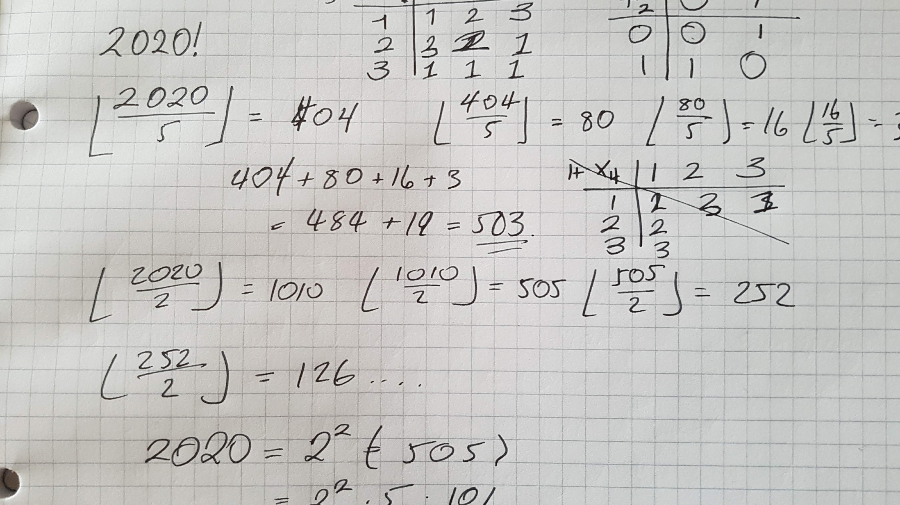
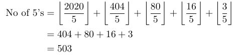
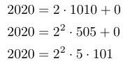
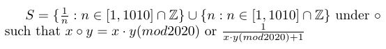

Is 2020 Mathematically important
01 Jan 2020

Welcome to 2020, but is 2020 is a good year for numbers? It's been said already on the Guardian website, and I am sure many other websites that 2020 can be made by concatenating, adding, multiplying, and factorialing the digits from 0 to 9. I shall leave that as an exercise and then put the solution at the bottom, but I am here for other nice properties and facts about 2020.
-
We can consider the factorial of 2020, 2020! and to see what properties it has. As an olympiad and number theory nutter, it is time to find how many zeros that it has. We can do this by dividing 2020 by 5, then that result by 5 and the one after... and so on.
This will find the amount of 5s in the factorial. To get 0s you need both 5s and 2s, but there are always two 2s for every 5 in
the factorial, so we only need to count the fives:

So there are 503 zeros at the end of 2020! !
503 is a prime for those people interested, it's the 96th prime number.
-
What about the factors, we can use Euclids algorithm to find them! We can start with 22 as 4|2020. Then we can carry on through
the primes, to 5, then we are left with 101, 101 is very obviously prime.

The factors unfortunately dont seem to be very interesting this year.
-
2020 is excessive, this means that the sum of its divisors is greater than itself, 2020 has the following divisors: 1, 2, 4, 5, 10, 20, 101, 202,
404, 505, 1010. The sum is 2264, this is 244 greater than in 2020. This means every multiple of 2020 is also abundant, so 4040 is abundant, so is 6060
and so on. Luckily 2020 isn't weird because 2020 = 1010 + 505 + 404 + 101.
Those were bizarre sentences!
-
Now let us do something slightly more interesting, let's create a group of order 2020, how can we do this you may ask? We could create a seemingly complex
modulo group such as: This would indeed produce a group:
- Closure: All multiplication is between 1 and 1010 (mod2020) and then the reciprocal is also in the closure due to every element having a reciprocal
- Identity: There is an element, 1, such that 1 ○ x = x = x ○ 1. Where x is any element.
- Inverse: Every element, x, has another element, x-1, such that xx-1 = e
- Associativity: This is assumed as we are using multiplication.
-
So we have done group theory, number theory, what about some sort of curvature? How differentiable is 2020? No, not as a number! As a curve, we can see that the 0's are just ovals, so they are infinitely differentiable, C∞, what about the two, well the top is infinitely differentiable, but now this depends on how you draw your 2s if they are curvy, go differentiate, make
my your dreams come true! If you have a point somewhere, you cannot differentiate, you are not
worthy of that feat, you are too pointy!
So there are most definitely two types of people, people who can differentiate their twos and ones that... well, just can't.
So here is the link the Guardian article